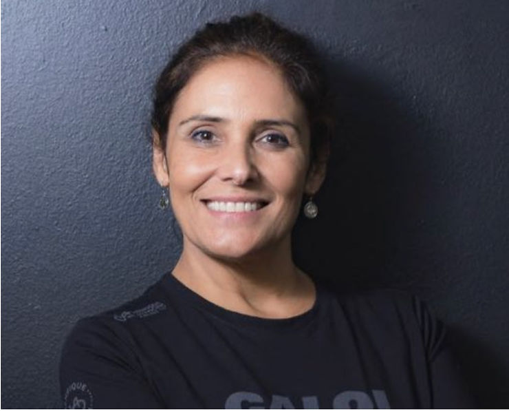
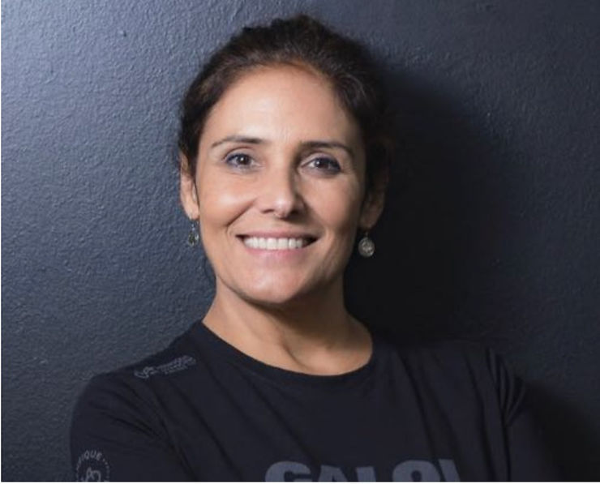
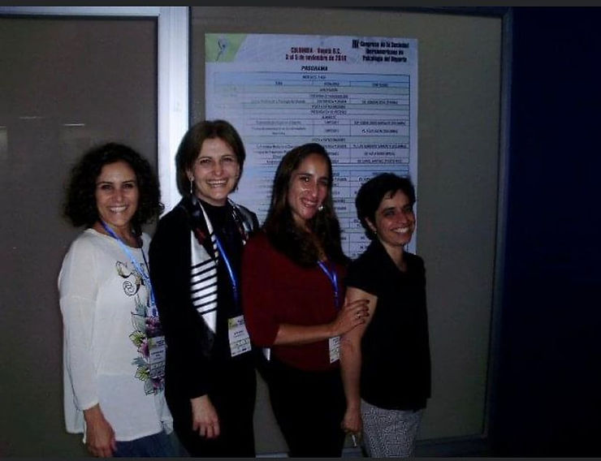

tualizado: 26 de set. de 2022

Alessandra Dutra, psicóloga, CRP 06/44171-0, professora e a segunda presidente da Associação Brasileira de Psicologia do Esporte – ABRAPESP, gestão 2010-2011, conversamos com ela, para descobrir um pouco de sua história com a entidade e a Psicologia do Esporte.
ABRAPESP – Alessandra, conte sua história com a ABRAPESP?
ALESSANDRA – Eu era professora universitária da Universidade Metodista. Na Faculdade de Psicologia, ministrava Psicologia Social e na faculdade de Educação Física, dava aula de Psicologia do Esporte. Além de lecionar, estava responsável, na Faculdade de Psicologia, do programa de estágio em Psicologia do Esporte. Sentia-me muito sozinha, com necessidade de pares para conversar, dialogar, trocar ideias e fui atrás da Professora Katia Rubio, que, na época, coordenava um grupo de estudos em Psicologia do Esporte na Universidade de São Paulo. Achei uma forma de interagir. Comecei a frequentar o grupo e foi lá que fiquei sabendo mais sobre a ABRAPESP. Todos do grupo estavam lá. Pouco tempo depois fui ao congresso internacional da SIPD Sociedad Iberoamericana de Psicologia del Desporto em Torrelavega, Espanha. E a pedido da Kátia, fui representando o grupo de estudo e a ABRAPESP. A Kátia disse, “vai lá e nos represente mesmo que de modo informal. E lá fui eu como membro do grupo de estudo da Katia Rubio.
ALESSANDRA – Dois anos depois, congresso da ISSP (), em Marrocos. Presente o grupo e a Kátia, que me apresentou como membro ativo e pré-candidata à presidência da ABRAPESP. Ela perguntou se eu poderia me candidatar e apesar de ter muitas atividades. Naquela época, eu não me sentia pronta para assumir a presidência. Mas eu tinha uma segurança na minha liderança, segurança naquilo que eu pensava quanto ao modelo coletivo, me sentia respaldada pela Kátia e tinha o apoio das pessoas do grupo. Por amizade e coleguismo, aceitei o desafio!
ALESSANDRA – Foi quando percebi que não era só uma questão de ações coletivas. E como sou mestre em psicologia social, entendi que também era uma questão política. Eu tinha noção do que iríamos enfrentar, mas me sentia um pouquinho crua. Principalmente no início, porque de cara assumi o compromisso de fazer uma ação para o Congresso Brasileiro de Psicologia. Foi quando escolhi um caminho: chamar pessoas para dentro da ABRAPESP, que não tinham identidade com as questões políticas da associação. Na ABRAPESP sempre foi de muita luta. Durante a gestão da Kátia, encaramos os desafios até como forma de poder existir. Na minha gestão, trabalhamos para agregar todas as pessoas que “faziam um contra” com a entidade. Eu queria trazê-los para junto de nós. Juntar todo mundo para compartilhar. Refletindo a necessidade de alinhar a outros profissionais e mostrar que as nossas ações estavam no desenvolvimento do esporte.
ALESSANDRA – Não foi fácil, porque eu vinha após dois períodos da Kátia, um ícone. Foi uma luta. Uma luta interna, pessoal, profissional, mas eu queria muito ter uma relação amistosa com todo mundo, com toda comunidade da Psicologia do Esporte e com outros grupos. “vamos baixar as armas” e “vamos nos conhecer” . A minha gestão foi muito isso, baixar as armas e interagir, conhecendo uns ao outros.
ALESSANDRA – A minha contribuição foi de ampliar o universo da ABRAPESP criando diálogo com outras áreas afins. Trazendo estas áreas para dentro da ABRAPESP e levar a ABRAPESP a fazer para outras áreas.
ABRAPESP – O que você acha que a ABRAPESP fez pela Psicologia do Esporte?
ALESSANDRA – Tudo. Foi a primeira entidade sólida a fazer um diálogo, ser uma voz da Psicologia do Esporte. Criou assim uma identidade, ao mesmo tempo política, filosófica, epistemológica. Conseguiu ser um QG, vamos colocar assim, um lugar onde as pessoas possam se manifestar, buscar ações, dar um papel de empoderamento à Psicologia do Esporte, dentro do cenário não só esportivo mas da Psicologia. Reconhecimento da área.
ABRAPESP – Se alguém pergunta para você: porque ser membro da ABRAPESP?
ALESSANDRA – Relacionamento, troca de experiências, conhecimento… A ABRAPESP são as pessoas. Ela é sólida, através das pessoas.
ABRAPESP – Na sua gestão, qual evento marcou?
ALESSANDRA – Foi um que eu já estava como presidente, o congresso da SIPD, na Colômbia. Levei uma carta da associação para o presidente da entidade, na época Joaquín Dosil, junto com outras cartas de entidades brasileiras como Handebol, para pedir que o próximo congresso fosse no Brasil. Estavam lá eu, Kátia Rubio, Simone Sanches, Luciana Angelo…veja a foto:

ABRAPESP – Quem são estas mulheres?
ALESSANDRA – Aquelas que ajudaram a associação, são responsáveis pelo empoderamento da ABRAPESP.
ABRAPESP – Hoje, como você vê a Associação ?
ALESSANDRA – A ABRAPESP foi crescendo junto com a história da Psicologia do Esporte. Em 2016 mais uma vitória: o fortalecimento da Psicologia do Esporte na Rio 16. Somente duas, das modalidades que medalharam, não tinham Psicólogos na equipe. Foi um legado lindo, construído a 30 cabeças da Psicologia do Esporte. Foi um marco. Marcou muito a ABRAPESP.
ALESSANDRA – Nos dias atuais, eu vejo mais uma função: a de ajudar na formação do psicólogo. Se antes era onde as pessoas podiam se fortalecer, reconhecer seus pares, trocar experiências, hoje começa a se preocupar com a formação e capacitação dos profissionais. Exemplo é a ideia de ter supervisores, de ser uma fonte de informação, formação. Ampliou para formação e capacitação do psicólogo.
ABRAPESP – Quem foi sua referência?
ALESSANDRA – Kátia Rúbio e, naquele momento, o grupo de estudos da USP. Hoje, me sinto muito orgulhosa de fazer parte do processo histórico de uma entidade que a gente viu nascer.
ABRAPESP – E qual é o papel da ABRAPESP para você?
ALESSANDRA – É a nossa casa. Ela te dá um respaldo, que muitos podem perguntar mas que respaldo é esse? Eu respondo: você está tendo a oportunidade de conviver com profissionais que fizeram a história da psicologia do esporte brasileira. É a memória. A ABRAPESP é a memória de todo o trajeto que a Psicologia do Esporte fez até aqui. E você ter isso como respaldo, e saber que pode interagir com todas estas pessoas é incrível. A ABRAPESP é a representação da Psicologia do Esporte Brasileira.